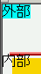

スクリプトを用いる場合、親要素や祖先要素をオブジェクトとして参照することができない。
<div style="position:absolute;" id="l1">外部</div> <form"><div> <input type="button" value="外から変更" onclick="javascript:document.layers['l1'].bgColor='aqua'"> </div></form> <div style="position:absolute;" id="l2">内部 <form><div> <input type="button" value="内から変更" onclick="javascript:document.layers['l2'].bgColor='lime'"> </div></form> </div>
ボタンを押すと各々のレイヤーの背景色が変わります。前者は背景色を設定するスクリプトがレイヤー要素の外部の要素にある場合、後者はスクリプトがレイヤー要素の子孫要素に存在する場合です。
※両方のボタンを押してスクリプトを動作させた後の状態です。なお、レイヤーl2の背景色を変えようとするとJavaScriptコンソールに「document.layers.l2 has no properties.」というメッセージが表示されます。
Netscape Navigator4.8
ここではイベント属性で直接スクリプトを指定する方法を用いましたが、script要素を用いる場合にも同様の現象が発生します。head要素内に置いたscript要素内でスクリプトを指定することでこの不具合を回避することができます。